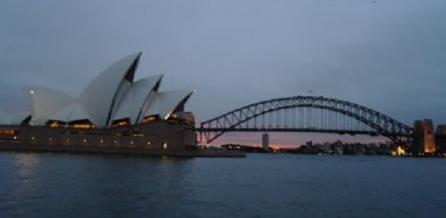
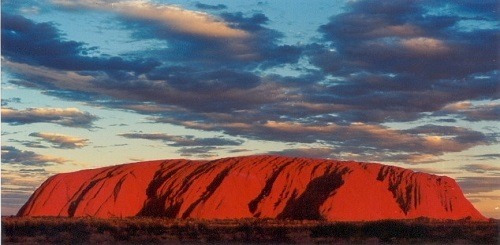

[ 호주 ]
현지인 추천 맛집 || 기념품 추천 || 관광명소
2023.04.24

관광명소
|  |
1. 오페라하우스와 하버브리지 : 시드니의 상징, 오페라하우스와 하버브리지를 감상하러 호주 시드니로 지금 여행을 떠나세요! 먼저 서큘러 키에서 오페라하우스와 하버브리지를 바라볼 수 있는데 선착장에 정박되어있는 크루즈 선과 함께 있는 것을 보게 된다면 아름다운 경관을 볼 수 있습니다. 낮에도 물론 훌륭한 풍경을 볼 수 있지만, 일몰이 지나고 밤에 야경을 보게 된다면 더 놀랍고 멋진 모습을 눈에 담을 수 있습니다. |
|
2. 울루루 : 호주 울루루는 세계적으로 유명한 명소 중 하나로, 호주 중심부 남부 지역인 레드센터에 위치하고 있습니다. 울루루는 오래 전부터 호주 원주민(Aboriginal)에게 문화와 영감을 주는 거대한 모래암 바위입니다. 이 지역에서는 울루루 자체뿐만 아니라 주변 지역의 자연경관과 원주민들의 문화체험 등이 인기 있는 관광지입니다. 울루루 근처에서는 산책과 캠핑 그리고 거대한 바위를 오를 수 있는 기회인 클라임이 가능했지만, 현재 문화보전에 관련 하여 금지되어 있습니다. 그래도 이 곳을 방문하게된다면 다양한 경험과 문화, 역사에 대해 흥미진진하게 살펴볼 수 있습니다. |
 |